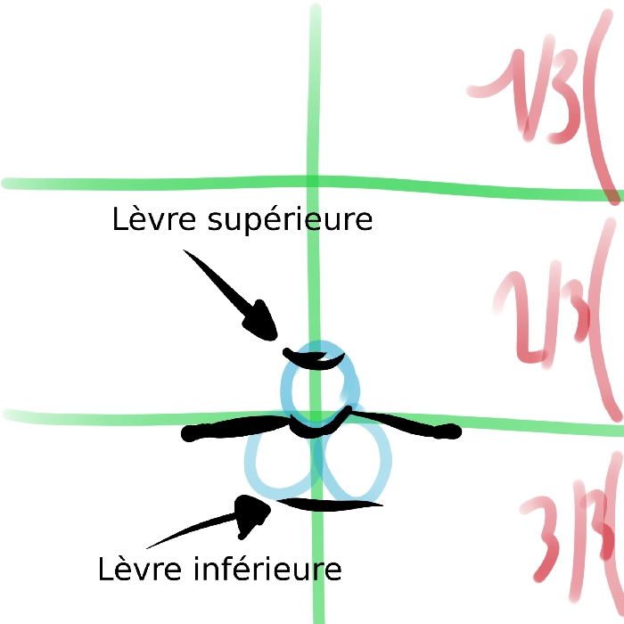
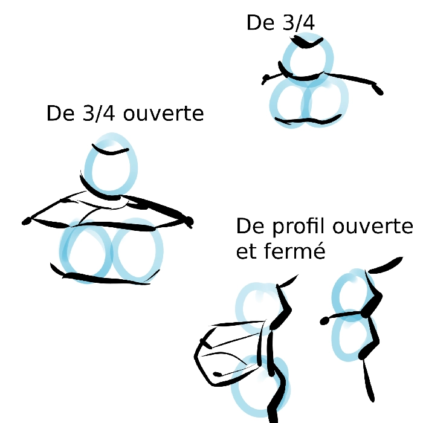

comment dessiner le nez
Les bouches sont
vraiment expressives
(tout autant que les yeux) ;
il faut donc vraiment savoir
les faire. Pour cela, rien de
plus simple : je vais vous
l'expliquer directement dans
ce cours-ci.
Avant de commencer, il vous
faudra connaître quelques bases
pour savoir placer une bouche au
bon endroit du visage. Elle
n'est pas au centre, mais bel
et bien aux 2/3 du visage en
partant du haut, et les
extrémités de la bouche doivent
être au niveau de chaque pupille.

Maintenant que vous savez cela, on va pouvoir commencer sérieusement à s'intéresser aux techniques pour former une bouche. Pour cela, rien de mieux que d'utiliser la technique des 3 ronds : dessinez-en un au-dessus de la ligne du deuxième tiers, puis deux autres alignés horizontalement juste en dessous. Il ne vous restera plus qu'à placer la ligne de la bouche au milieu de ces ronds en suivant la forme qui va avec.

Maintenant, voici la même technique sous différents angles, et avec la bouche ouverte également, pour vous aider au mieux à vous faire une idée de celle-ci.Pour toute incompréhension du cours, n'hésitez pas à m'en faire part sur le serveur discord, dans le salon dédié.